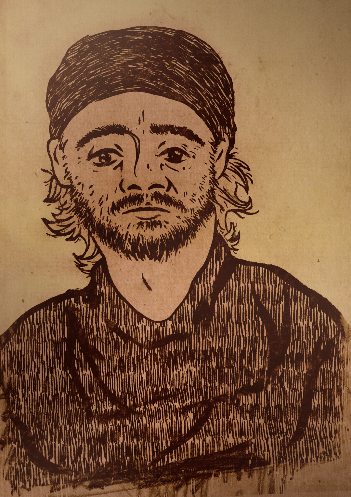
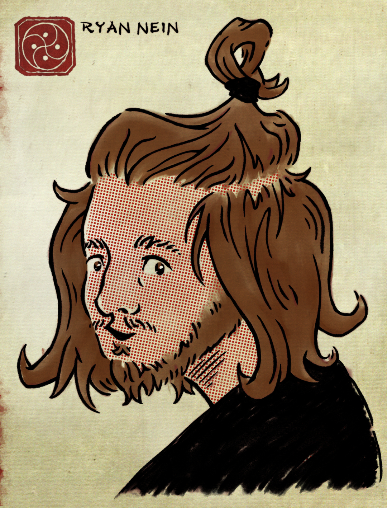
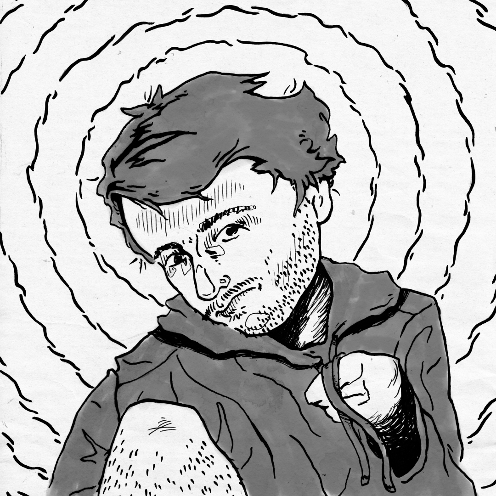
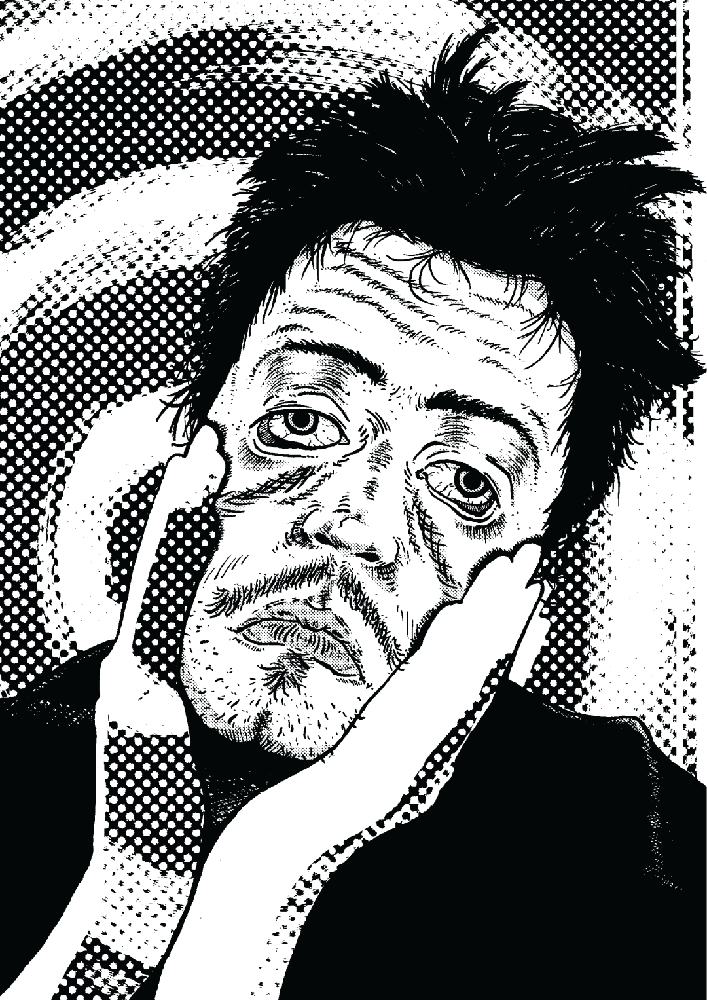
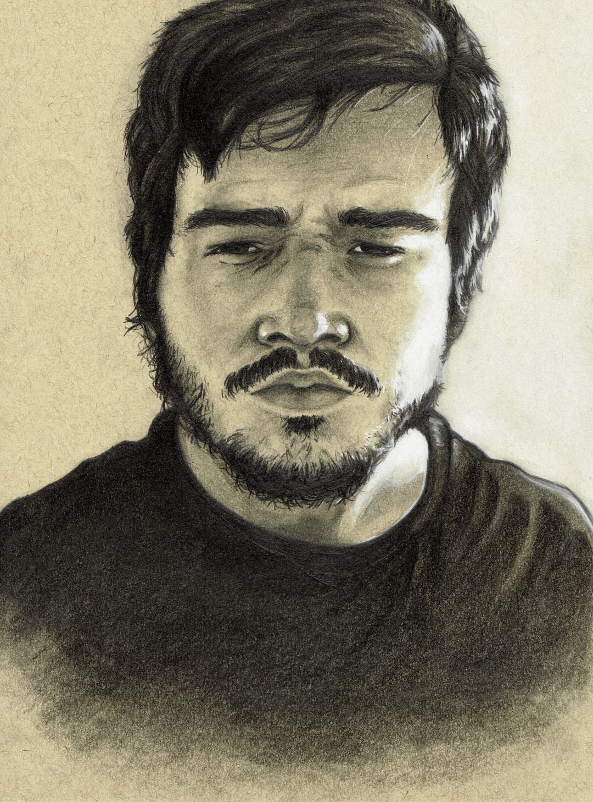
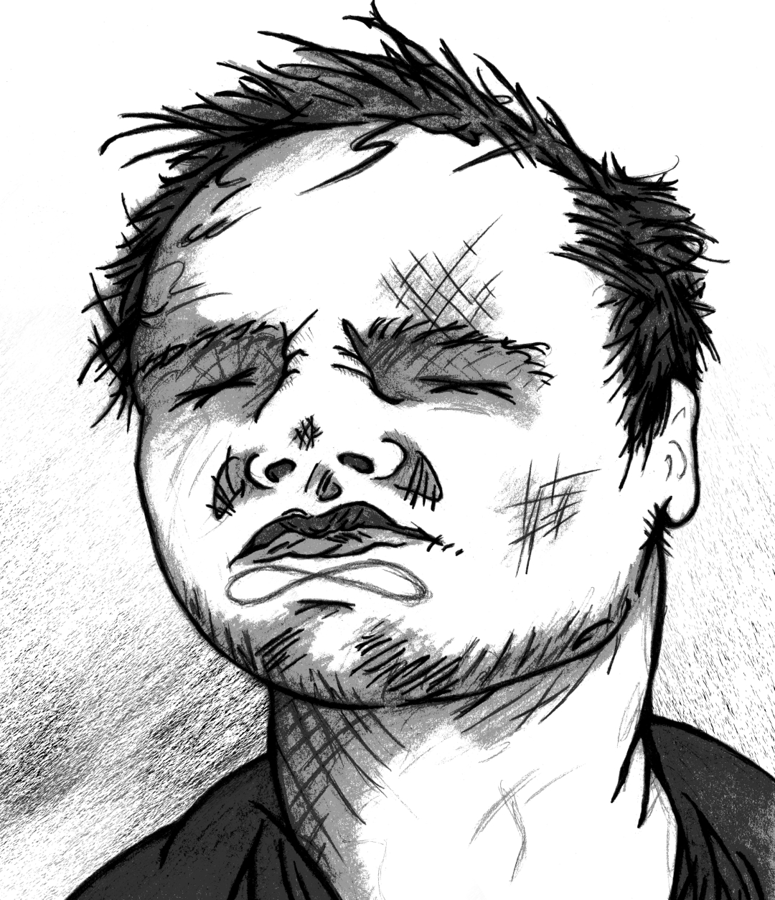

My History of Self-Portraits
2026

It’s been a while since I’ve made a self-portrait — two years at least. At one point in time, I made it a goal to create a unique self-portrait every year, but last time I attempted one I gave up and thought I abandoned that long-term project altogether. The reason is not that I was no longer interested in expressing myself, but rather that I no longer knew what to express. The idea of realistic representation has never appealed to me within this genre because I have never felt that physical appearance was indicative of character. Instead, I relate to the trope of the individual who sees themself as a mind that only happens to be carried around by a body. Perhaps this is residue of Cartesian philosophy, which is so sticky, even if only in an unconscious manner. If anything, creating a self-portrait, for me, is an act of overcoming physical contingency and realizing the self within material actuality.
In 2025, my stylistic approach was to create a realistic grayscale digital portrait. I took selfies for reference and started the work in Clip Studio. I was dissatisfied with the results even as they confronted me unfinished because there was no heart in what I was doing. The reason I resorted to realism was that I had no novel ideas and was unsure of the artistic identity I was expressing. So I never finished a self-portrait that year.
This time around I thought about my actual physical form and wanted to confront the physical actuality I live with. This aim would challenge me to think in an indexical register I rarely inhabit. Despite this inception, the surface appearance of my new portrait is far from indexical, which is actually a sign that I discovered a new and genuine mode of self-expression. The indexicality of my 2026 self-portrait comes from embracing physical presence rather than realism, and I believe it demonstrates what it is like to be around or with me.
My neglect of physical appearance is tied to my clothes. I have never paid attention to what I wear and my closet is comprised exclusively of cheap plain dark clothes. But because my hair has grown long enough to be occasionally bothersome, I recently brought out the single piece of clothing I own that holds some sentimental value. It’s nothing special, just a simple bandana with an elastic closure in back. It’s a practical item for containing hair, but that practicality means something to me aesthetically. Wearing that bandana makes me feel more like a craftsman and artist because of the utility it provides. If culture was not so restrictive, I’ve always thought I would like to wear foreign and religious garbs in my daily life. The robes of a monk are more comfortable than jeans and a T-shirt and as far as I am concerned are more serious than anything businessmen are forced to wear. Alan Watts talked about how such clothes force one to slow down, and because of that are not fit for the hustle of modern industrial life. My bandana makes me feel like a monk, and also expresses a subtle form of deviance in being atypical American attire.
My new self-portrait is based around how I feel wearing that bandana. I did not use photos or a mirror for reference because accurate resemblance is contrary to how I feel wearing it. The portrait does express my features — thick eyebrows, a strong nose, an unkempt beard — but it doesn’t require particularly accurate ratios of such features. The work is a mixture of physical and digital media. The base drawing was done with ink and a dip pen, but it was heavily touched up digitally to make for more line thickness than what an ink pen provides. I used some textures that I made a long time ago from editing subjects out of old artworks on aged paper. The whole piece is colored digitally in sepia tone to match with the paper textures. Overall it expresses a new kind of groundedness I have at my current age, unseen in my earlier artistic work.
2024

Part of the reason I did not finish a portrait in 2025 is because I thought my 2024 self-portrait already expressed myself so perfectly. This work is a digital design that draws influence from Japanese woodcuts and Chinese ink washes. It depicts me with red halftones for skin and with long hair and a top knot. The pose and facial expression are based on “Girl with a Pearl Earring” by Vermeer. I am honestly more of a designer than an artist (in the traditional sense of the word), and this piece intersects both of those worlds with eloquence.
I have a frustration with the limited worldview of most Western philosophers, who constrict themselves to analytic writing from the Anglosphere. I read deeply from the literature of the world and draw influences both philosophically and artistically from foreign cultures and their media output. But when I talk about my Buddhist influences, for instance, I am treated like an arbitrary specialist in those foreign systems who simply ignores the “real” work of contemporary mainstream philosophy. To me, philosophy, aesthetics, cuisine, fashion, and any other facet of life should be treated as a synchronic whole that can only be understood through understanding the myriad parts that only manifest contingently within varied world circumstances. I think this self-portrait expresses that view in how it refuses to be nailed down. It is neither Western nor Eastern, but a synthesis of what happened to be living with me in my mental state at the time of creation.
2022

My 2022 self-portrait came immediately after a period of personal turmoil in my life that reshaped my self-image and necessitated an artistic expression. The portrait shares in the grayscale and expressionist themes of my early work, but replaces the aggression and angst of my youth with a soft and almost fragile outlook. The portrait was done hastily with a dip pen and markers in front of my bathroom mirror. My leg is exposed in the bust-crop while bent and I am holding the strings from a hoodie as if they were in some way significant. The loose circles in the background simultaneously convey psychological strain and a religious halo-like framing. I paired this self-portrait with a music EP titled “Low”, but few people listened to it.
2020

In 2020 I was in community college studying graphic design and was unsatisfied with my educational experience. I learned very little from the teachers but made it a quest to learn art and design on my own terms however I could. This was the time when I rediscovered a love for the comic medium. As a child I loved comics and read X-Men and Batman comics in particular, but I grew out of that phase and thought I had outgrown comics in general. But because I wanted to develop as an artist and designer, I returned to the medium and found myself enthralled by it in a way I did not expect. I started off by reading some manga because Japan has a more apparent market for comics aimed at adults. Tezuka’s “Ayako” blew me away because of its incredibly detailed yet restrained background art, and it also had a page-turning narrative style that I never experience from fictional prose. But then I discovered “Goodnight Punpun” by Inio Asano and found what I think of to this day as my favorite piece of fiction in any medium. Asano blends hyper realistic backgrounds edited from photographs with occasionally cartoony characters as well as grotesque exaggerated closeups of characters.
At this time I acquired comic making materials and started to draw with ink tools. For the self-portrait I took inspiration from the manga I was reading, but also did not want to be derivative, so I infused elements of Western expressionism that I admire. The portrait is of me with my hands on my face dragging my skin down with misaligned eyes, and there is a halftone circle pattern made from an ink brush for a background. halftone shading was added digitally after scanning the ink page. I used this as my “brand identity” along with the DIN typeface in college, partially as a “fuck you” to the very idea of branding oneself at all. I have always been allergic to marketing (which is ironic for a graphic designer), and I would rather present myself honestly as the anxious and angsty comic book fan I was than appeal to corporate sensibilities.
2019

I don’t have much to say about my 2019 self-portrait. It is a realistic graphite drawing done with black and white pencils on brown sketchpad paper. It is a decent render and looks the most like me from an indexical standpoint, but it does not express much about me as an artist. There is a slightly warped look when viewed closely that I always seem to produce from purely physical drawing. What the portrait does convey is the seriousness of my personality, but not much else.
2018

2018 is the first portrait I am including here, although there were other self-portraits before that year. This is the first time I created what I would consider competent work that I can still look back on fondly. It was made in high school, which is indicated by the lack of a beard and more round and youthful facial features. But the end product is nothing like a typical high schooler’s art. The composition is bold with distinctly expressionistic features, including sharp yet ununiform hatching, Xs for eyes, and an infinity sign made by the contour between my chin and mouth. In high school I was simply an angry person who hadn’t accepted the facts of life and that is shown in this portrait.
I made this portrait before I really knew about ink drawing as a medium and before I was educated enough in art history to know what expressionism was. I had developed an interest of “putting lines where there shouldn’t be lines” and that was a naïve seed of expressionistic work that I discovered for myself as if inventing a genre. Even though the style would be more natural in ink, I drew the portrait on multiple pages with pencil and ran them through thresholding in Photoshop on a school computer to achieve the not-quite ink aesthetic. In retrospect, that method delivered rather unique and expressive results, and I think maybe I should return to it sometime.